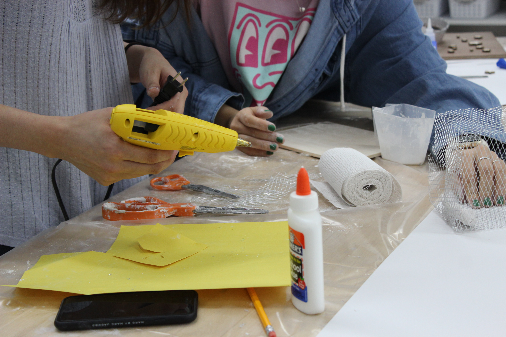

MakerSpace Research
Program Profiles
Projects
Participants
Schools
Interactives
Role Exchange in Collaborations
Simulations
Role Exchanges in Group Work
Photos
Models of Systems
Participate
Social Role Development in Making
Collaborative Role Development in Making
Data from the Making Process

Participant Profiles
Role Development